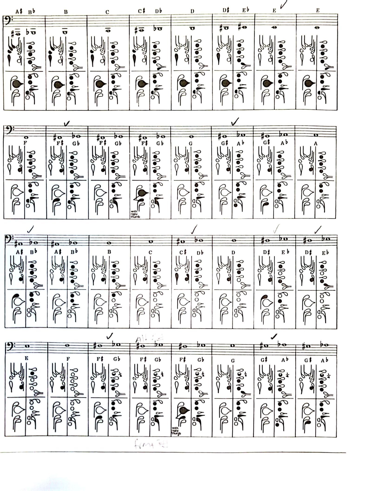
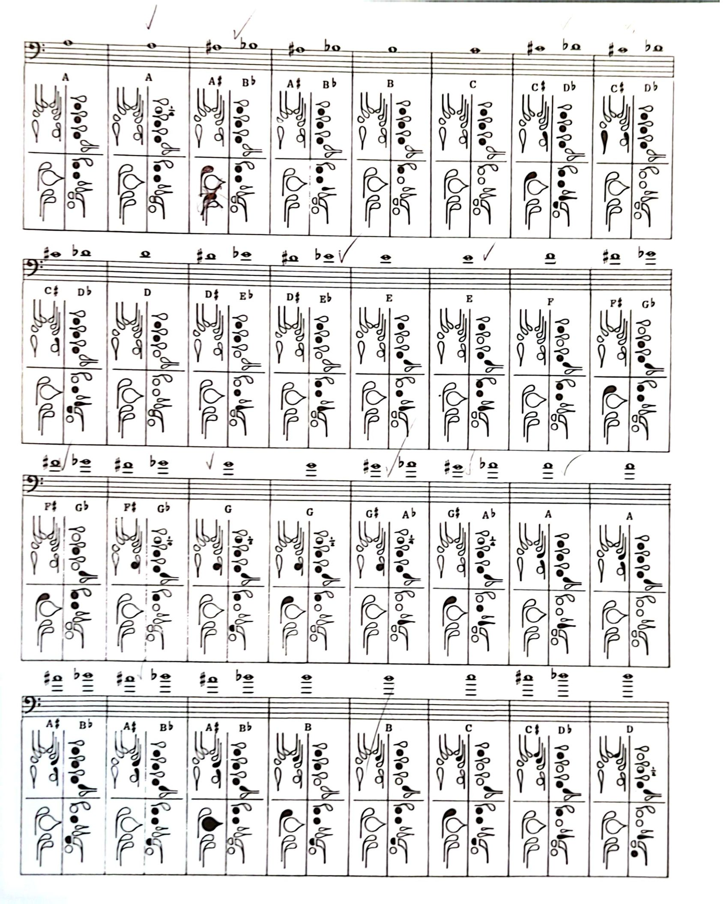
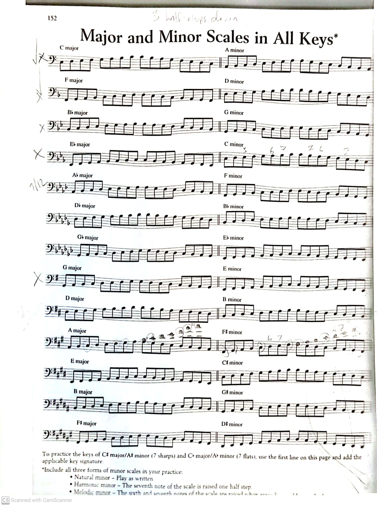

The Bassoon
Overview
The bassoon is a musical instrument in the woodwind family, often playing in the tenor and bass ranges. It is composed of six pieces, including the bocal and reed. Music for the bassoon is usually written in bass and tenor clef. Bassoons are primarily made of hard maple or plastic composite materials. Bassoons are known for their unique sound and versatility. They are excellent for both expressive solos and punchy rhythmic lines.
This website will explain some information about the basic features of the bassoon:
Bassoon Notes
The bassoon uses a mix of keys and holes to produce different pitches.
The range of a bassoon begins at B♭1 and extends to G5. This means the bassoon can play roughly three octaves.
Use a fingering chart to learn new fingerings. Repeatedly using them in your playing will help you remember them. Fingerings vary between players, as each player has to meet their own and their bassoon's requirements. Experiment with a tuner to find what fingerings are most in-tune, which speak more, how out of tune certain fingerings are, and which ones are the best for fast passages (how in-tune the note is matters less if it is only heard as part of a sixteenth-note run). Some of the fingerings will be learned as you need them. The front F♯ fingering, for example, is used when another fingering that requires the right hand thumb is used immediately before or after an F♯ to avoid bubbles.
 Half Holes and Quarter Holes
The notes F♯, A♭, A, and high G♭ through high C require either a half hole or quarter hole.
This means that you have to shift your left hand pointer finger to only cover the first tone hole half-way or a quarter of the way. How much you cover the hole depends on your bassoon.
Scales
There are three types of minor scales: natural, harmonic, and melodic. Natural minor scales are played as written on the sheet. Harmonic minor scales raise the 7th by a half-step going up and down the scale. Melodic minor scales raise the 6th and 7th by a half-step only going up; they are lowered again to be as written going down.
For more about scales and other music theory, go here.
Flicking and Venting
Flicking involves the left hand thumb momentarily pressing or "flicking" the high A through D keys at the beginning of the same notes an octave lower to avoid the notes cracking (brief multiphonics) when you slur between octaves. For example, if you are playing middle A and you have to slur to the high A an octave above, you can briefly flick the A key as you slur up. Venting is similar, where instead of flicking the key, the flicking key is held for the duration of the note. Venting effects the pitch and intonation of the note, but it usually allows the note to "speak" more.
For A and B♭, use the second key up from the whisper key. For the rest, use the key above the previous one. If you have the smallest flicking key (the fourth one up from the whisper key) you can use this one for D instead. If any of these notes aren't cracking on your instrument, then great! Flicking is a need-based kind of thing, though knowing how to can be helpful. Practice flicking smoothly. If your notes is automatically going up an octave when you release the whisper key, try to keep the pitch down using the "Ah" vowel and thinking the lower pitch.
Pitch Control
Players have a lot of flexibility with their pitch and it is important that the player learn how to control their pitch. They do this through a variety of ways (alternate fingerings, reeds, increasing or decreasing the length of the bassoon etc.) but the most flexible methods are using embouchure and breath support.
Your embouchure is the shape of your mouth and tends to be a bit different depending on instrument and player. Double reeded instruments are played with both the upper and lower lip pulled over the teeth, often with the upper lip a bit further along the reed for an overbite. The lips provide a cushion between the teeth and the reed, and miniscule adjustments can be made by adjusting the pressure the lips apply to the reed. In general, though, the embouchure for bassoonists shouldn't change. The embouchure is a huge part in sound production, and you typically want to keep this steady.
How much reed in your mouth affects tone and can make low/high notes easier to come out. Less reed tends to give a more "reedy" sound and more reed tendsw to be smoother. For me, high notes like to come out clearer when I have more reed and low notes are more responsive when I have less reed. Play arouond with it and experiment to find what happens for you on your instrument.
Lowering or raising your jaw lowers and raises the pitch. This is how you tune notes. There is a limit to how much you can tighten or loosen your jaw (when the reeds stops producing sound) and at that point you need a new solution.
Breath control determines how stabile your sound is, how quickly you run out of breath, and the overall tone. Players have to develop control of the diaphragm, throat, neck, and upper chest, which are all used to increase, decrease, and direct air flow. Your breath before you play also effects the sound that comes out. When you breathe in, make sure to think "Ahh" in your head. Your mouth will form the shape, your breath will form the shape, and you will play with that shape and vowel in mind. Which vowel to use depends on the instrument and octave, but bassoonists should use "Ahh" for most of their range and "Eee" for the upper register. As you are playing, keeping the tone steady requires practice and muscle training, especially for pianissimo, long tones, and keeping all of the notes even.
If you have imprecise amounts of muscle and/or air pressure for the desired pitch, the note will crack, have poor intonation, accidentally produce the wrong impartial, or not speak at all. Practice long tones to help with breath control.
Pitch control is vital for producing a good tone on any instrument.
Articulation
Articulation describes how muscicians start and end a note. For wind instruments, we use our tongue. Hence, why wind players sometimes call articulation tonguing or striking for wind instruments.
For any reed instrument, we touch the tip of our tongue to the tip of the reed(s). Double reed instruments are particularly good at short, staccato tonguing. A silent "tee" is made when we strike the reed to cause a slight breach in air flow. For softer articulation, we replace the "t" with "d".
Articulation is also about how the note is released. This, like the start of notes, will depend on the mood of the piece. If the piece is meant to be somber, you don't want to use short, punchy articulation.
Starts of notes can vary greatly: double reed players, especially, are very good at staccato, punchy notes. However, we can also produce a beautiful legato, or a breath attack.
Vibrato
Vibrato is a technique muscicians use during longer notes to make them more interesting and expressive. You've probably heard vibrato before from popular singers. he technique can vary between intruments and preferences.
For bassoon, the vibrato should be from the throat. You can also vibrato from lower (like your core), but throat vibrato is my preferred method.
Other Techniques
Multiphonics
A multiphonic is a technique where several notes are produced at once (on instruments that only produce one note at a time).
For woodwind instruments, multiphonics can be produced with different fingerings, different embouchures, or voicing the throat with conventional fingerings. Multiphonics can depend on the environment, player, and instrument, so techniques used to make on are going to be different.
For the bassoon, multiphonics can be produced with new fingerings, but are generally heavily influenced by embouchure position. Look up different techniques and experiment on your own instrument to see what works best for you.
Double-Tonguing
Double-tonguing is used when the music has many rapid notes in quick succession too fast for regular articulation. To do it, use "tee-kee" instead of "tee". Bassoonists also use "taco", so you can experiment and see what you like. This is for a pizzicato sequence that requires staccato articulation, but if you begin with "da" the second syllable is "ga".
Flutter-Tonguing
Two methods: alveolar trill and uvular trill. Alveolar trills are usually done by "gargling" in the back of the throat or the conventional method of rolling Rs/rolling the tip of the tongue to create a "FrrrFrrr" sound. Uvular trills are done by producing a flutter tongue effect in the back of the tongue, which usually makes a slightly rougher "frrr" effect. It can also be used if the player cannot roll their tongue. The effect depends on instrument and volume.
Alveolar Trill
- The conventional method is to roll the tip of the tongue to create a "FrrrFrrr" sound.
Uvular Trill
- Done by producing the flutter tongue effect in the back of the throat.
- Usually done by "gargling" in the back of the throat.
- Tends to create a rougher "frrr" effect.
- Can be used when an alveolar trill is not appropriate to achieve the fluttertongue effect (i.e. faster fluttertongue)
Both methods require more air to produce the effect.
Practice Strategies
You should practice everyday. Even if it's only for 5 minutes. This is because playing an instrument involves a lot of muscle memory, and taking even a few days off can result in losing some of your progress. Warm up should be the first thing you do. Your instrument is cold when you pick it up. Cold instruments play flat. For my warm ups, I do arpeggios, scales, long tones (on a scale with vibrato), and then articulation. Then, I practice new stuff. After that, for the last part of my practice,